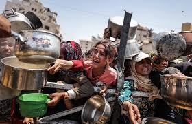
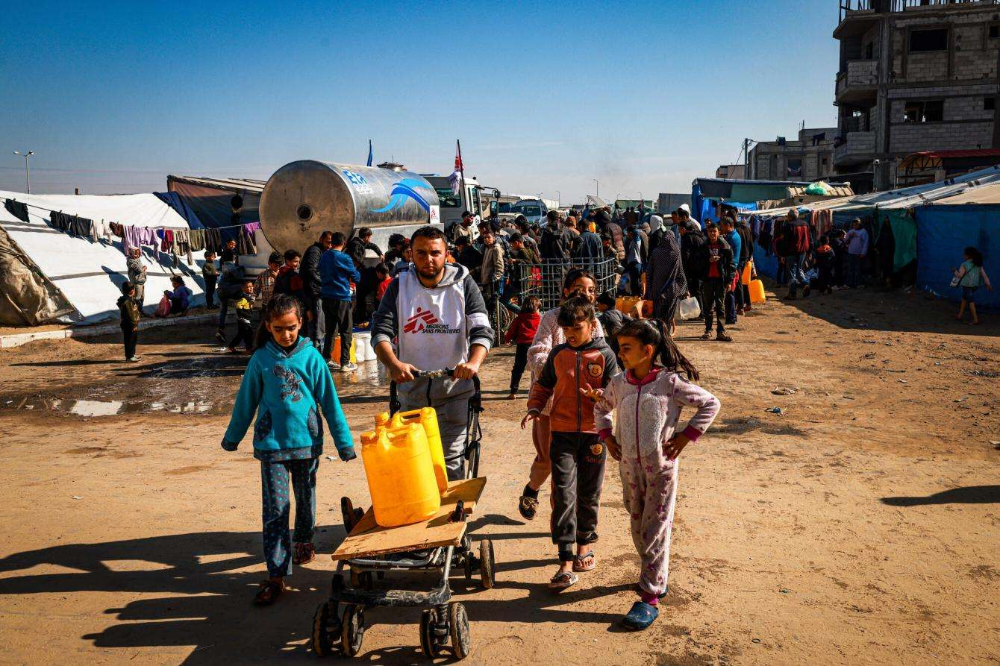
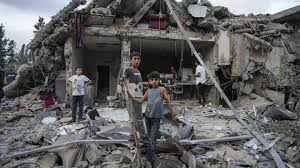
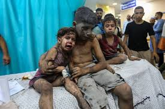

What people of Gaza go through

Families in Gaza are skipping meals, rationing bread, and waiting hours for limited food aid. For many children, hunger is no longer temporary — it’s constant.

Clean drinking water is scarce. Many families are forced to rely on contaminated sources, increasing the risk of disease — especially for children.

Entire neighborhoods have been destroyed, leaving families without shelter, privacy, or safety. Many now live in overcrowded temporary spaces or tents.

Schools are closed or destroyed. Many children live with fear, displacement, and trauma instead of safety, learning, and play.